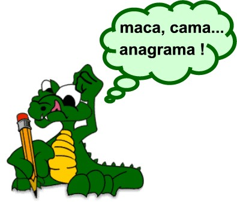

Anagram:
do Gr. aná, para cima, para trás + grámma, letra
s. m., transposição de letras;
inversão das letras de um nome para formar outro.

Most puzzle enthusiasts are familiar with anagrams, that is, groups of words that use the same set of letters but in a different order (for example,sacar, casar and caras are anagrams).
Given a list of words, your task is to discover which words are anagrams of each other and determine the size of each anagram class. An anagram class is the group of words that use the same letters.
For example, consider the following words:
maca lima cama mila texto
maca and cama are anagrams, lima and
mila are also anagrams, and texto is not an anagram of any other word.
In this case, there are three anagram classes. Each anagram class is represented by the alphabetically smallest word in that class. Here, the classes would be represented by cama (class with 2 words), lima (2 words), and texto (1 word).
An input consists of multiple test cases.
Each case begins with a number N indicating the number of words to process. This is followed by N lines, each containing a word with a maximum of 50 letters, all in lowercase.
The input ends with a case where N is zero.
For each case, you should first print a line of output, "#NUM", where
NUM represents the case number.
Then, print all the anagram classes in the format "classRepresentative classSize". The classes should be ordered by their size (in descending order), and in case of a tie, alphabetically by the representative word.
The output between two cases should always be separated by a blank line.
See the example to clarify how the output should be formatted.
Input
5 maca lima cama mila texto 3 caras casar sacar 1 teste 0
Output
#1 cama: 2 lima: 2 texto: 1 #2 caras: 3 #3 teste: 1